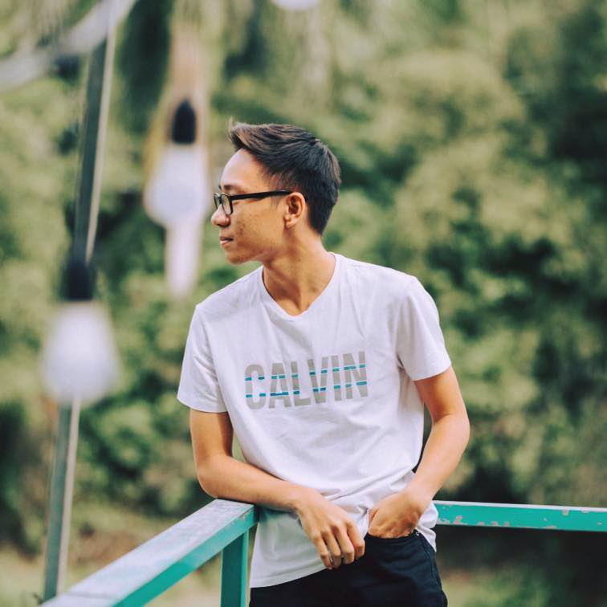
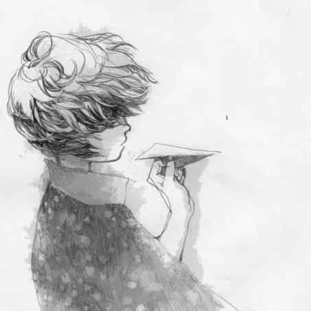
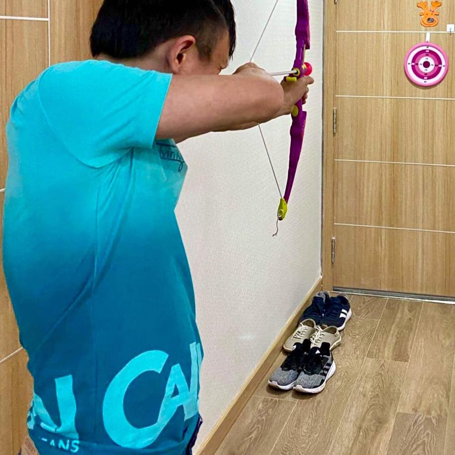

Đoàn Huy Tuấn
Là thành viên trẻ tuổi nhất của Team-2. Hiện tại mình đang là sinh viên chuyên ngành IT
của Học viện Công
nghệ Bưu chính Viễn thông(PTIT). Sở thích là cầu lông, cà phê cà pháo với bạn bè. Em rất
vinh dự được là một
phần của project lần này

Vũ Thu Hằng
Là leader tài năng của nhóm với nhiều quyết định sáng suốt và chính xác. Dưới sự lãnh
đạo của chị Hằng nhóm
đã nhanh chóng tìm được lối đi giữa con đường tăm tối mịt mù tìm ý tưởng cho project và
thực hiện nó một
cách suôn sẻ nhất. Luôn nghiêm khắc và đốc thúc mọi người trong công việc, một leader
rất tài ba =)))

Phan Quang Thạo
Là anh đại giàu kinh nghiệm và trưởng thành nhất team-2. Anh Thạo đã rất cố gắng giúp đỡ
các em